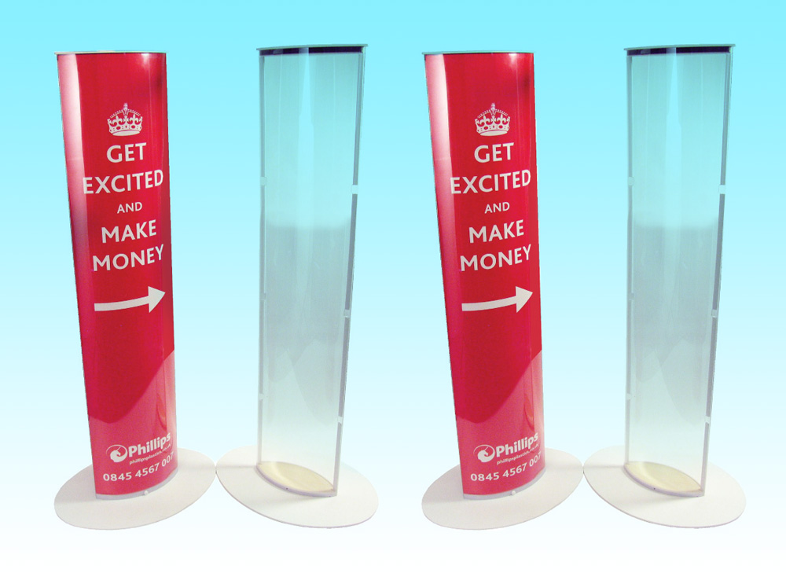
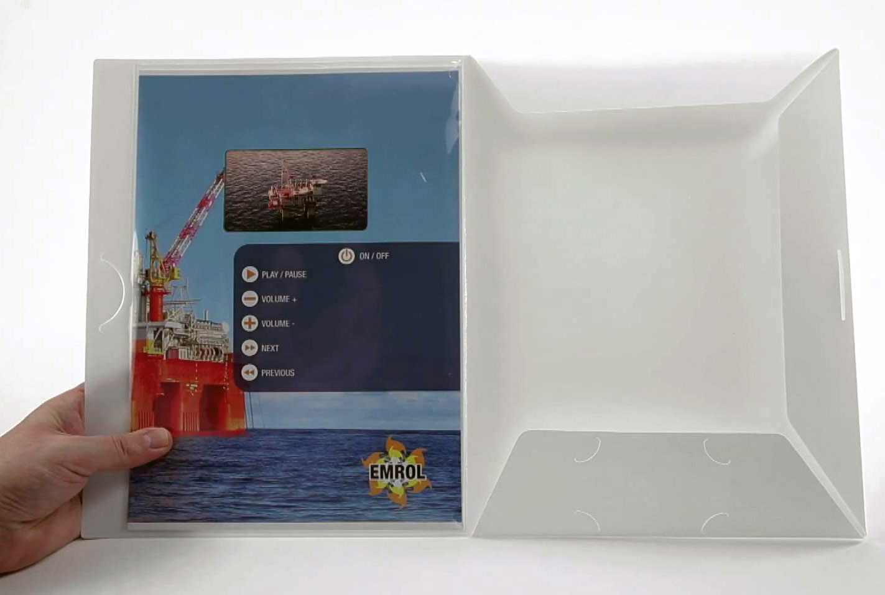

Print On Demand (POD) Products
These presentation and promotional products are sustainable, cost efficient and will increase your marketing relevance. They can be swiftly repurposed by replacing the digitally printed inserts, which can be personalised for effective and targeted communication.
POD products work well at events, exhibitions, training, offices, point of sale and other marketing activities. The most popular POD products are Totems and the Movie Presentation Folder for B2B business models.
Totems

Totems are the perfect solution for eye catching consumer traffic. Also to guide visitors and attendants during events and exhibitions.
Their glossy display panels fold flat for transport, and can be easily assembled to produce stunning 360˚ graphics.
They can be re-used and re-purposed time and time again, using new inserts as required. They come in a variety of different sizes to fit your needs. And if we don’t have the Totem that you want we could create one just for you!
Movie presentations in a personalised folder

The movie presentation folder will help you capture your best prospects' attention and/or impress your best customers. It will also help you in building your brand and keeping it uppermost in your customer’s minds.
This innovative marketing tool can be fully personalised with the recipient’s name and other relevant content to help you sell the unique value of your company.
The Movie Presentation Folder is the exact strategy to impress and capture the attention of special customers and/or prospects in a very personal way.
Watch this short movie to see how it works...